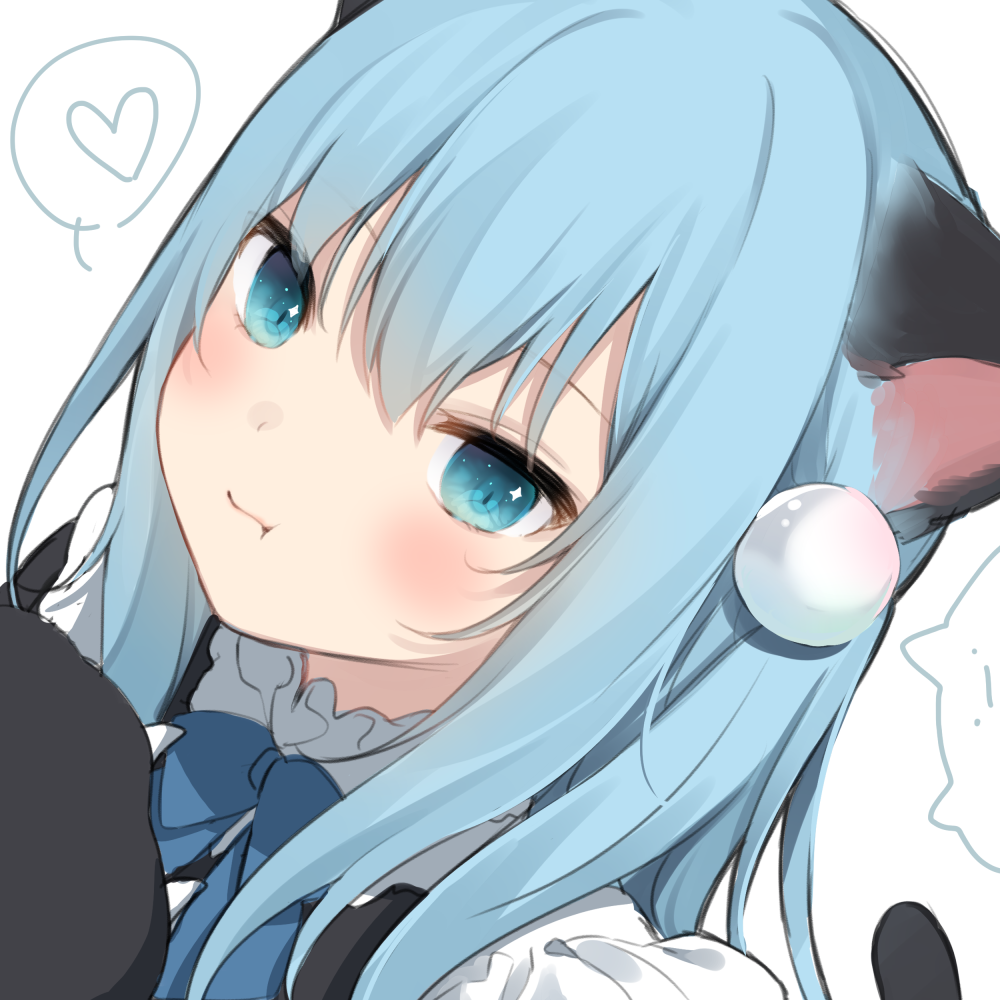
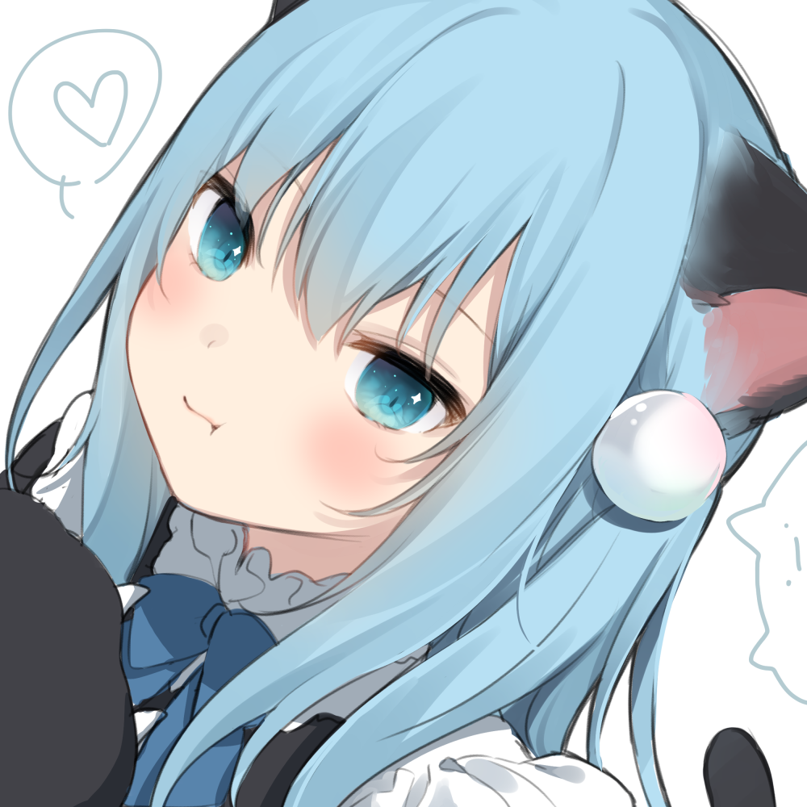

简单介绍一下，这是我


由于经常性被朋友和部分同学叫成猫猫,而且无论我的头像怎么换它的风格一直都是猫猫， 那就让我来好好介绍一下这个角色的画师--甘城 なつき
由于经常性被朋友和部分同学叫成猫猫,而且无论我的头像怎么换它的风格一直都是猫猫， 那就让我来好好介绍一下这个角色的画师--甘城 なつき
猫耳娘大爱！（吸）
甘城なつき画风在各种作品中也是比较独特了，特有的两个原创角色猫羽雫和なちょ猫 也是本人当前头像的画师。接下来让我一一介绍她的原创角色。
首先是我最喜欢的角色，也是我所用的头像的角色——猫羽雫

上面展示的是2016年甘城所绘的设定图，看着是不是很可爱呀。
那么在数年之后设定图有什么变化呢？
喜欢的原因有很多，比如说很可爱的外形，令人安心的浅蓝色调，还有猫耳！
nacho是なちょ的罗马音，1米58的身高，生日10月11，喜欢吃，喜欢打游戏。
一般作为甘城的直播形象。